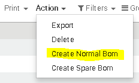

<section class="oe_container oe_dark">
    <div class="oe_row oe_spaced">
        <h2 class="oe_slogan">Plm Cutted Part Extention</h2>
        <h3 class="oe_centeralign">Odoo version covered : 10.0</h3>
        <div class="oe_span12">
            <p class="oe_mt32">
				This module allows you to improve the capability of your odoo plm for managing the cutted parts 
            </p>
            <p class="oe_mt32">
            	How it works:
            	<ul>
					<li>Go to Search on Engineering Parts and select a product</li>
					<li>Go to the action Menu and click on the Create Normal Bom
						
					</li> 
					<li>Here you can select the type of the action for row material that could be
						
					</li>
            	</ul>
            	<p>
            	After that you have your normal bom created
            	</p>
            </p>
         </div>
    </div>
</section>